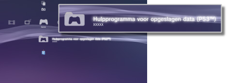

Game > PlayStation®3-software spelen > Opgeslagen data gebruiken
Opgeslagen data gebruiken
Opgeslagen data voor PlayStation®3-software worden opgeslagen in de systeemopslag. De data worden weergegeven onder (Hulpprogramma voor opgeslagen data (PS3™)).

Opmerkingen
- Opgeslagen data worden apart beheerd per gebruiker. Als er meer dan een gebruiker is onder
 (Gebruikers), dan hangen de items die onder (Hulpprogramma voor opgeslagen data (PS3™)) worden weergegeven af van de gebruiker die is aangemeld.
(Gebruikers), dan hangen de items die onder (Hulpprogramma voor opgeslagen data (PS3™)) worden weergegeven af van de gebruiker die is aangemeld. - Als u een pictogram voor opgeslagen data selecteert en op de
 -toets drukt, kunt u opgeslagen data sorteren op basis van de datum waarop ze laatst bijgewerkt zijn of opgeslagen data groeperen op basis van de titel in het menu dat verschijnt.
-toets drukt, kunt u opgeslagen data sorteren op basis van de datum waarop ze laatst bijgewerkt zijn of opgeslagen data groeperen op basis van de titel in het menu dat verschijnt.
Opgeslagen data opslaan op de PSNSM-server
U kunt opgeslagen data van PlayStation®3-software opslaan op een PSNSM-server en deze downloaden op een ander PlayStation®3-systeem om uw spel verder te kunnen spelen. Om deze functie te kunnen gebruiken hebt u een Sony Entertainment Network-account nodig en moet u geabonneerd zijn op de PlayStation®Plus-service.
Opgeslagen data automatisch opslaan
U kunt nieuwe en recent geüpdatete opgeslagen data regelmatig automatisch opslaan op een onlineopslaglocatie.
U dient deze functie voor elke game afzonderlijk in te stellen.
1. |
Onder |
|---|---|
2. |
Selecteer [Automatisch uploaden opgeslagen data] en zet deze optie op [Aan]. |
 (Game) selecteert u de game met de opgeslagen data die u wilt bewaren, en drukt u op de
(Game) selecteert u de game met de opgeslagen data die u wilt bewaren, en drukt u op de Opmerkingen
- De opgeslagen gegevens die geüpdatet worden na het inschakelen van de instelling, worden automatisch geüpload.
- Stel bij
 (Instellingen)
(Instellingen)  (Systeeminstellingen) > [Automatisch updaten] in op [Uit] om het automatisch updaten van opgeslagen data uit te schakelen.
(Systeeminstellingen) > [Automatisch updaten] in op [Uit] om het automatisch updaten van opgeslagen data uit te schakelen.
Manually storing saved data
1. |
Selecteer |
|---|---|
2. |
Selecteer [Kopiëren]. |
3. |
Selecteer [Online opslag] als de opslaglocatie. |
Opgeslagen data downloaden van een onlineopslaglocatie naar het PS3™-systeem
1. |
Selecteer |
|---|---|
2. |
Selecteer de opgeslagen data die u wilt downloaden en druk vervolgens op de |
3. |
Selecteer [Kopiëren]. |
Opmerkingen
- De maximaal beschikbare opslagcapaciteit is 1 GB en het maximale aantal data-items dat kan worden opgeslagen is 1000.
- Opgeslagen data die niet van PlayStation®3-, PC Engine- en NEOGEO-software zijn, kunnen niet opgeslagen worden.
- Opgeslagen data die auteursrechtelijk beschermd zijn, worden als volgt behandeld:
- - Uploaden naar onlineopslaglocatie: kan altijd uitgevoerd worden.
- - Opgeslagen data downloaden vanaf onlineopslaglocatie: wanneer opgeslagen auteursrechtelijk beschermde data geüpload worden naar of gedownload worden van een onlineopslaglocatie, moet u minstens 24 uur wachten voor u diezelfde data kunt downloaden.
- Voor sommige games kunt u de onlineopslag niet gebruiken. Voor meer informatie over games of services die deze onlineopslag niet ondersteunen, klikt u hier.